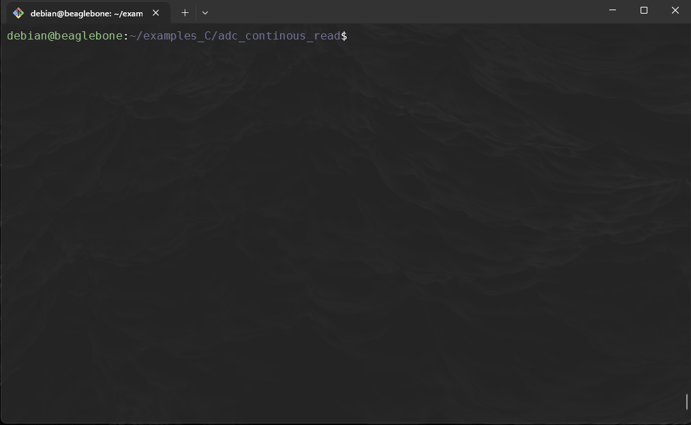

ADC Library - Continous measurements
- You need to have finished ADCLibrary section
1. Important information
So far we are reading analog voltages in one-shot mode. Most applications need continuous reading of input values. For continuous mode, we need a buffer to capture the input values while the BBB is doing something else.
Important folders in the iio:deviceX directory are:
-
buffer\enable: get and set the state of the bufferlength: get and set the length of the buffer.
-
The buffer can be enabled by doing:
The first line tells which analog channel to scan. Just change the x in in_voltagex_en if you need a different analog channel. The second line specifies the length of the buffer and the last line enables the buffer.
-
scan_elementsdirectory contains interfaces for elements that will be captured for a single sample set in the buffer.debian@beaglebone:~# ls -al /sys/bus/iio/devices/iio\:device0/scan_elements/ drwxr-xr-x 2 root root 0 Jan 1 00:00 . drwxr-xr-x 5 root root 0 Jan 1 00:00 .. -rw-r--r-- 1 root root 4096 Jan 1 00:02 in_voltage0_en -r--r--r-- 1 root root 4096 Jan 1 00:02 in_voltage0_index -r--r--r-- 1 root root 4096 Jan 1 00:02 in_voltage0_type -rw-r--r-- 1 root root 4096 Jan 1 00:02 in_voltage1_en -r--r--r-- 1 root root 4096 Jan 1 00:02 in_voltage1_index -r--r--r-- 1 root root 4096 Jan 1 00:02 in_voltage1_type -rw-r--r-- 1 root root 4096 Jan 1 00:02 in_voltage2_en -r--r--r-- 1 root root 4096 Jan 1 00:02 in_voltage2_index -r--r--r-- 1 root root 4096 Jan 1 00:02 in_voltage2_type -rw-r--r-- 1 root root 4096 Jan 1 00:02 in_voltage3_en -r--r--r-- 1 root root 4096 Jan 1 00:02 in_voltage3_index -r--r--r-- 1 root root 4096 Jan 1 00:02 in_voltage3_type -rw-r--r-- 1 root root 4096 Jan 1 00:02 in_voltage4_en -r--r--r-- 1 root root 4096 Jan 1 00:02 in_voltage4_index -r--r--r-- 1 root root 4096 Jan 1 00:02 in_voltage4_type -rw-r--r-- 1 root root 4096 Jan 1 00:02 in_voltage5_en -r--r--r-- 1 root root 4096 Jan 1 00:02 in_voltage5_index -r--r--r-- 1 root root 4096 Jan 1 00:02 in_voltage5_type -rw-r--r-- 1 root root 4096 Jan 1 00:02 in_voltage6_en -r--r--r-- 1 root root 4096 Jan 1 00:02 in_voltage6_index -r--r--r-- 1 root root 4096 Jan 1 00:02 in_voltage6_type -rw-r--r-- 1 root root 4096 Jan 1 00:02 in_voltage7_en -r--r--r-- 1 root root 4096 Jan 1 00:02 in_voltage7_index -r--r--r-- 1 root root 4096 Jan 1 00:02 in_voltage7_type -
scan_elementsexposes 3 files per channel:in_voltageX_en: is this channel enabled?in_voltageX_index: index of this channel in the buffer’s chunksin_voltageX_type: How the ADC stores its data. Reading this file should return you a string something like below:
debian@beaglebone:~# cat /sys/bus/iio/devices/iio\:device0/scan_elements/in_voltage1_type le:u12/16>>0Where:
lerepresents the endianness, here little endianuis the sign of the value returned. It could be eitheru(for unsigned) ors(for signed)12is the number of relevant bits of information16is the actual number of bits used to store the datum0is the number of right shifts needed.
When the ADC sequencer finishes cycling through all the enabled channels, the user can decide if the sequencer should stop (one-shot mode), or loop back and schedule again (continuous mode). If one-shot mode is enabled, then the sequencer will only be scheduled one time (the sequencer HW will automatically disable the StepEnable bit after it is scheduled which will guarantee only one sample is taken per channel). When the user wants to continuously take samples, continuous mode needs to be enabled. One cannot read ADC data from one channel operating in One-shot mode and and other in continuous mode at the same time.
2. Updating adc.h
You need to update the adc.h header file to take advantage of the continous mode offered by the ADC chip:
-
We are adding adding the following macros:
#define SYSFS_ADC_ENABLE_PATH "/sys/bus/iio/devices/iio:device0/buffer/enable" #define SYSFS_ADC_LENGTH_PATH "/sys/bus/iio/devices/iio:device0/buffer/length" #define SYSFS_ADC_SCAN_DIR "/sys/bus/iio/devices/iio:device0/scan_elements" ... #define ADC_BUF 6 #define REFVOLTAGE 1.8 #define MAXADC 4096 #define MAX_SAMPLE_RATE 2000000 // 200kSPS -
Additionally we are adding the following prototypes:
int adc_to_voltage(unsigned int adcValue, float *voltage); int adc_get_buffer(unsigned int adcPin, unsigned int *value); int enable_channel(unsigned int adcPin); int disable_channel(unsigned int adcPin); int enable_buffer(void); int disable_buffer(void); int set_buffer_length(unsigned int len);Complete code here [48 lines]
#ifndef ADC_H_ #define ADC_H_ /************************************************** * Contents * * ***********************************************/ #define SYSFS_ADC_DIR "/sys/bus/iio/devices/iio:device0" #define SYSFS_ADC_ENABLE_PATH "/sys/bus/iio/devices/iio:device0/buffer/enable" #define SYSFS_ADC_LENGTH_PATH "/sys/bus/iio/devices/iio:device0/buffer/length" #define SYSFS_ADC_SCAN_DIR "/sys/bus/iio/devices/iio:device0/scan_elements" #define POLL_TIMEOUT (3 * 1000) /*3 seconds*/ #define MAX_BUF 256 #define MAX_LEN_BUF 100 #define ADC_BUF 6 #define REFVOLTAGE 1.8 #define MAXADC 4096 #define MAX_SAMPLE_RATE 2000000 // 200kSPS /************************************************ * ADC RELATED * ************************************************/ int adc_get_value(unsigned int adcPin, unsigned int *value); int adc_fd_open(unsigned int gpio); int adc_fd_close(unsigned int fd); int adc_to_voltage(unsigned int adcValue, float *voltage); int adc_get_buffer(unsigned int adcPin, unsigned int *value); int enable_channel(unsigned int adcPin); int disable_channel(unsigned int adcPin); int enable_buffer(void); int disable_buffer(void); int set_buffer_length(unsigned int len); #endif /* ADC_H_*/
3. Updating adc.c
Now we need to update adc.c to create the functionality of our new prototypes:
-
Starting with
int enable_channel(...);:Add to the bottom of the
adc.cfile:Suppressed code here [23 lines]
/*************************************************************** * enable_channel ****************************************************************/ int enable_channel(unsigned int adcPin){ int fd; char buf[MAX_BUF]; snprintf(buf, sizeof(buf),SYSFS_ADC_SCAN_DIR "/in_voltage%d_en", adcPin); fd = open(buf,O_WRONLY); if (fd < 0) { perror("adc/scan_element/"); return fd; } // to enable continous mode write(fd, "1", 2); close(fd); return 0; } -
Likewise of
int disable_channel(...), you only need to modify thewrite()... aswrite(fd, "0",2);Suppressed code here [23 lines]
/*************************************************************** * disable_channel ****************************************************************/ int disable_channel(unsigned int adcPin){ int fd; char buf[MAX_BUF]; snprintf(buf, sizeof(buf),SYSFS_ADC_SCAN_DIR "/in_voltage%d_en", adcPin); fd = open(buf,O_WRONLY); if (fd < 0) { perror("adc/scan_element/"); return fd; } // to disable continous mode write(fd, "0", 2); close(fd); return 0; } -
Next we need to do the same for
enable_buffer()anddisable_buffer()-
int enable_buffer(void);Suppressed code here [23 lines]
/*************************************************************** * enable_buffer ****************************************************************/ int enable_buffer(void){ int fd; char buf[MAX_BUF]; // to enable continous mode snprintf(buf, sizeof(buf),SYSFS_ADC_ENABLE_PATH); fd = open(buf,O_WRONLY); if (fd < 0) { perror("adc/buffer/enable"); return fd; } write(fd, "1", 2); close(fd); return 0; } -
Likewise of
int disable_buffer(...), you only need to modify thewrite()... aswrite(fd, "0",2);:Suppressed code here [23 lines]
/*************************************************************** * disable_buffer ****************************************************************/ int disable_buffer(void){ int fd; char buf[MAX_BUF]; // to enable continous mode snprintf(buf, sizeof(buf),SYSFS_ADC_ENABLE_PATH); fd = open(buf,O_WRONLY); if (fd < 0) { perror("adc/buffer/enable"); return fd; } write(fd, "0", 2); close(fd); return 0; }
-
-
Next we need to set the buffer length as to store n values:
Suppressed code here [25 lines]
/*************************************************************** * set_buffer_length ****************************************************************/ int set_buffer_length(unsigned int len){ int fd; char buf[MAX_BUF]; char lenBuf[MAX_LEN_BUF]; snprintf(buf, sizeof(buf),SYSFS_ADC_LENGTH_PATH); fd = open(buf,O_WRONLY); if (fd < 0) { perror("adc/buffer/length"); return fd; } snprintf(lenBuf, sizeof(lenBuf),"%d",len); write(fd, lenBuf, sizeof(lenBuf)); close(fd); return 0; } -
Lastly, for the adc continous mode, we need to create the
adc_get_buffer(...):Suppressed code here [23 lines]
/**************************************************************** * adc_get_buffer ****************************************************************/ int adc_get_buffer(unsigned int adcPin, unsigned int *value) { int fd; char buf[MAX_BUF]; char retChars[ADC_BUF]; // Path to buffered ADC values snprintf(buf, sizeof(buf), SYSFS_ADC_DIR "/in_voltage%d_raw", adcPin); // Open the buffer file fd = open(buf, O_RDONLY | O_NONBLOCK); if (fd < 0) { perror("adc/get-buffer"); return fd; } // Read buffer data ssize_t bytesRead = read(fd, retChars, sizeof(retChars)); if (bytesRead < 0) { perror("adc/get-buffer/read"); close(fd); return -1; } // Convert the read data to an integer value *value = strtol(retChars, NULL, 0); close(fd); return 0; } -
We also made a prototype to do the voltage conversion for adc, make the
int adc_to_voltage(unsigned adcValue, float *voltage){}:-
Try make this yourself first, implement this equation and make reference to the macros,
REFVOLTAGEandMAXADC:\[ V_{in} = \frac{adcValue\ \cdot\ V_{ref}}{2^n - 1} \]
-
-
Remember to use make to update the libraries:

4. Make a programme to utilise the continous capibilities
-
Create a directory whether you are storing your implementations, for me I use
~/examples_C/adc_continous_read -
Once in the directory you can create a file called
adc_continous_read.c -
We are going to modify the file to take user input, the pin number and the size of the buffer:
Suppressed code here [57 lines]
#include "adc.h" #include <stdio.h> #include <stdlib.h> #include <unistd.h> int main(int argc, char *argv[]) { if (argc != 3) { fprintf(stderr, "Usage: %s <adcPin> <bufferLength>\n", argv[0]); return EXIT_FAILURE; } unsigned int adcPin = atoi(argv[1]); unsigned int bufferLength = atoi(argv[2]); unsigned int adcValue; float voltage; // Enable buffer and set buffer length if (enable_buffer() < 0) { fprintf(stderr, "Error enabling buffer.\n"); return EXIT_FAILURE; } if (set_buffer_length(bufferLength) < 0) { fprintf(stderr, "Error setting buffer length.\n"); disable_buffer(); return EXIT_FAILURE; } // Enable ADC channel if (enable_channel(adcPin) < 0) { fprintf(stderr, "Error enabling ADC channel %u.\n", adcPin); disable_buffer(); return EXIT_FAILURE; } printf("Starting continuous ADC read on pin %u...\n", adcPin); // Continuous read loop for (int i = 0; i < bufferLength; i++) { if (adc_get_buffer(adcPin, &adcValue) == 0) { adc_to_voltage(adcValue, &voltage); printf("ADC Value: %u, Voltage: %.3f V\n", adcValue, voltage); } else { fprintf(stderr, "Error reading buffer for ADC pin %u.\n", adcPin); break; } //usleep(500000); // Delay between reads (adjust as needed, e.g., 500 ms) } // Cleanup: disable buffer and channel disable_channel(adcPin); disable_buffer(); printf("Continuous ADC read completed.\n"); return EXIT_SUCCESS; }4. Create a `Makefile` and replicate the code below:Main Function
-
The
mainfunction begins by checking the arguments. It requires two command-line arguments:-
adcPin: The ADC pin number. -
bufferLength: Number of samples to read in continuous mode.int main(int argc, char *argv[]) { if (argc != 3) { fprintf(stderr, "Usage: %s <adcPin> <bufferLength>\n", argv[0]); return EXIT_FAILURE; } -
If the correct arguments aren't provided, it outputs an error and exits.
-
-
Setting Up the ADC
-
The program enables the buffer with
enable_buffer()and sets the buffer length withset_buffer_length(bufferLength). It then enables the specified ADC channel usingenable_channel(adcPin).if (enable_buffer() < 0) { fprintf(stderr, "Error enabling buffer.\n"); return EXIT_FAILURE; } if (set_buffer_length(bufferLength) < 0) { fprintf(stderr, "Error setting buffer length.\n"); disable_buffer(); return EXIT_FAILURE; } if (enable_channel(adcPin) < 0) { fprintf(stderr, "Error enabling ADC channel %u.\n", adcPin); disable_buffer(); return EXIT_FAILURE; }
-
-
Continuous Read Loop
-
The program enters a loop that iterates
bufferLengthtimes, reading ADC values usingadc_get_buffer(adcPin, &adcValue)and converting each to voltage withadc_to_voltage(adcValue, &voltage). Each value is printed with both its ADC and voltage readings.for (int i = 0; i < bufferLength; i++) { if (adc_get_buffer(adcPin, &adcValue) == 0) { adc_to_voltage(adcValue, &voltage); printf("ADC Value: %u, Voltage: %.3f V\n", adcValue, voltage); } else { fprintf(stderr, "Error reading buffer for ADC pin %u.\n", adcPin); break; } }Note:
The
usleepfunction is commented out here. In real applications, uncomment and adjust it to control the sample rate, if necessary.
-
-
Cleanup and Exit
- After reading, the program disables the ADC channel and buffer, and then exits.
disable_channel(adcPin); disable_buffer(); printf("Continuous ADC read completed.\n"); return EXIT_SUCCESS;
- After reading, the program disables the ADC channel and buffer, and then exits.
Suppressed code here [25 lines]
# Compiler and flags CC = gcc CFLAGS = -Wall -Werror # Target executable name TARGET = adc_continuous_read # Source files SRC = adc_continuous_read.c # Library to link against LIBS = -ladc # Default target: build the executable all: $(TARGET) # Build the executable $(TARGET): $(SRC) $(CC) $(CFLAGS) $(SRC) $(LIBS) -o $(TARGET) # Clean up build artifacts clean: rm -f $(TARGET) # Phony targets to avoid conflicts with files of the same name .PHONY: all clean-
Now use
makeand compile the code and run:
-